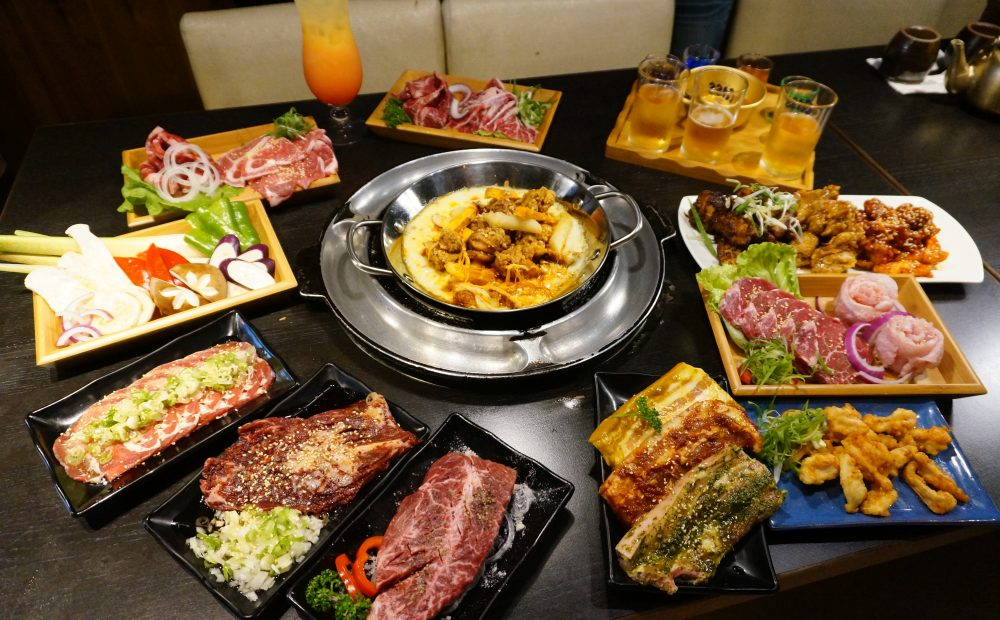

| 基隆 | 新竹 | 台北 |
台北：
台北是一個大城市，是全台灣都市化最完全的城市，所以很多外來的異國料理都可以在這裡找到，
來到台北就是來吃異國料理的，各個國家的傳統料理在台北基本上都可以找的到，像是：日本料理、印度料理、
美國牛排、韓式料理等，如果是沒吃過異國料理的人不訪可以到台北來嘗試一下，來看看走在美食尖端的城市吧！

(圖片來源：https://goo.gl/zXUWMh)
首先! 第一家：雙月食品社
台北雙月食品社是2018年米其林推薦名單之一，
不提供訂位離捷運善導寺站五分鐘內，台大醫院十分鐘。
雙月食品社菜單中最熱門的餐點有油飯、蛤蜊燉雞湯、何首烏燉雞、東石暴肥鮮蚵系列餐點，檸檬愛玉。
另外小菜中的百頁豆腐、甜不辣、豆皮、米血糕也很好吃，傳聞中張忠謀也很愛這家店呢!
(圖片來源：https://goo.gl/Co43MP)
第二家：阜杭豆漿
用餐環境和百貨公司地下街差不多，位置很多自行入座，這點還不錯，
因為就不用等餐牌一次，等位子又要在排隊，節省不少時間。價
格和一般中式早餐店相比稍微貴了一點點，商品種類則少了一點，建
議在排隊時就先上網查要點甚麼餐點以加快點餐速度。
(圖片來源：https://goo.gl/NQWikf)